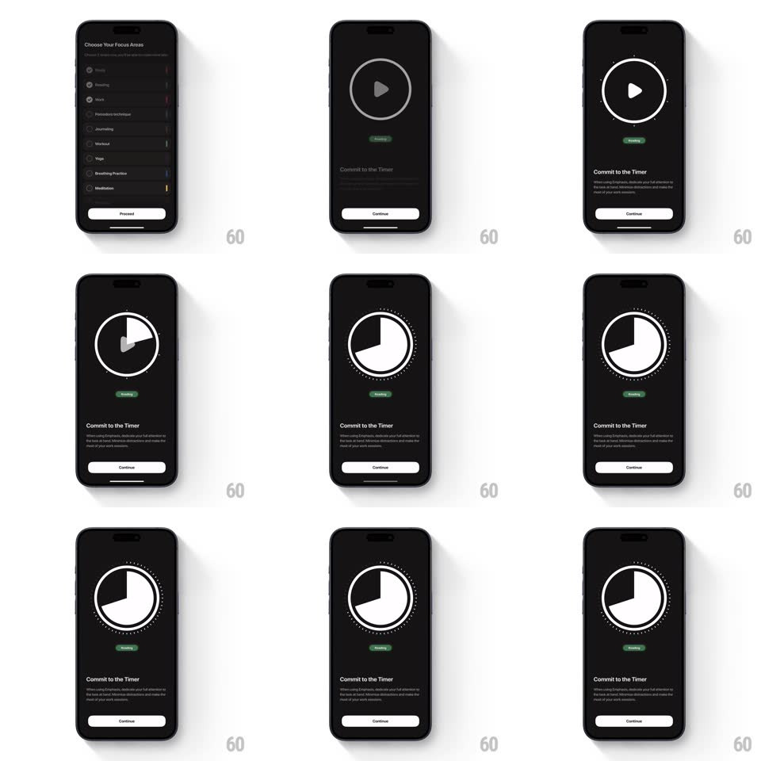

Media
Frame-by-frame

Rebuild this interaction 1:1: Emphasis's commit timer - on the "Commit to the Timer" screen, tapping the large circular play button morphs it into a pie-chart timer: the play triangle dissolves, the ring fills into a white pie wedge that sweeps clockwise, and a dotted tick ring materializes around the dial as the timer runs.

Rebuild this interaction 1:1: Emphasis's commit timer - on the "Commit to the Timer" screen, tapping the large circular play button morphs it into a pie-chart timer: the play triangle dissolves, the ring fills into a white pie wedge that sweeps clockwise, and a dotted tick ring materializes around the dial as the timer runs. ## Integration Integration: stack-agnostic spec - springs given as stiffness/damping, timed motions as duration + curve; map every value to your framework and animation library of choice. ## Scene Near-black screen: a large circular outline button with a play triangle at center, a small green "Reading" tag below it, "Commit to the Timer" headline with explainer copy, and a "Continue" button at the bottom. ## Motion spec Pattern: button-to-timer morph. - Tap: the play triangle scales down and fades (150ms) while the ring stays put. - The white pie wedge grows from the 12 o'clock position (sweep, ~500ms to the first resting segment), filling the circle's interior; the ring's stroke converts into the pie's outline. - A ring of small dots/ticks fades in around the dial (250ms, staggered clockwise) once the pie lands. - The pie then sweeps steadily clockwise like a timer hand (continuous, linear), with the dotted ring shimmering subtly as it passes. - The "Reading" tag and copy stay static - the dial owns the motion. ## Calibration - The morph keeps the circle's geometry constant - only its interior changes from play glyph to pie fill. - The pie fill is solid white on black - the strongest contrast on the screen. ## Reduced motion The play button cross-fades to the current pie state (250ms); no sweep loop. ## Don't miss - The tick ring appears after the pie, not with it - two beats, not one. - The wedge grows from 12 o'clock - never from the side.